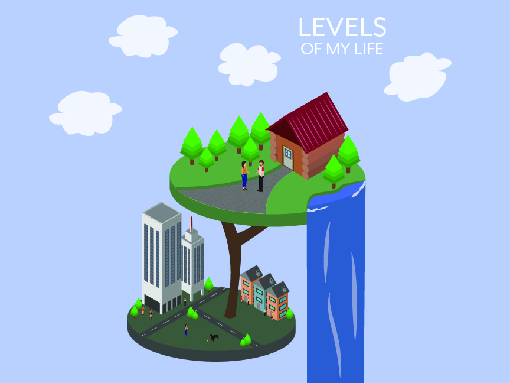

<div class="content push-0">
  <div class="grid grid-middle">
    <div class="unit xs-1 m-2-3 center push-0">
      <div class="embed embed-4by3">
        
      </div>
    </div>
    <div class="unit xs-1 m-1-3 push-0">
      <div class="embed embed-4by3">
        
      </div>
      <div class="embed embed-4by3">
        
      </div>
    </div>
    <div class="unit xs-1 pad-t">
      <h1 class="text-center">Isometrics Illustration • Levels of my life</h1>
      <p class="gutter center text-center max-length"><b>Isometric Drawing:</b> An isometric drawing looks like an isometric projection but all its lines parallel to the three major axes are measurable.Using only lines parallel to these three major lines I was able to create this design. I based the design on the different levels of my life. The top level being my country side and the second being my newly found city life.</p>
    </div>
  </div>
</body>
</html>
